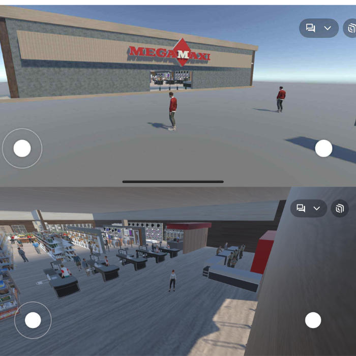

Creacion de un Entorno virtual - Quinto semeste
- Creacion de un Supermercado (MEGAMAXI - Condado Shopping)
- Proyecto de realidad aumentada que recrea el supermercado Megamaxi en un entorno virtual inmersivo y realista.
Atras....
Autores: Juan Pablo Mayorga, David Ayo, Mateo Carcelén
Introducción
Este proyecto presenta un recorrido virtual inmersivo del supermercado Megamaxi.
La experiencia fue desarrollada utilizando tecnologías de Realidad Aumentada
y es accesible desde gafas Oculus (Meta Quest 3) y desde iPad mediante la plataforma Spatial.io.
Objetivo: Facilitar una experiencia de navegación inmersiva, realista y accesible dentro del entorno del supermercado.
Contenido de la Presentación
- Introducción
- Requisitos del Sistema
- Acceso al Recorrido Virtual
- Guía de Uso – Desde iPad
- Guía de Uso – Oculus
- Zonas del Recorrido Virtual
- Glosario de Funcionalidades
Requisitos del Sistema
- iPad o dispositivo móvil con conexión a Internet
- Gafas Oculus Meta Quest 3 con Wi-Fi
- Cuenta en Spatial.io
- Navegador actualizado (Chrome, Safari, etc.)
- App de Spatial (opcional)
Acceso al Recorrido Virtual
- Ingresa al espacio
- Inicia sesión o crea una cuenta gratuita.
- Espera la carga y comienza el recorrido.
Guía de Uso – Desde iPad
- Abre el enlace en Safari o Google Chrome.
- Toca la pantalla para desplazarte en el entorno.
- Explora libremente las zonas del supermercado.
- Selecciona “Join on Web” para entrar desde el navegador.
Guía de Uso – Desde Oculus
- Usa los joysticks para moverte dentro del recorrido.
- Mueve la cabeza para cambiar la vista.
- Usa el botón de acción para interactuar.
Zonas del Recorrido Virtual
- Tecnología
- Vegetales
- Cosméticos
- Muebles
- Embutidos
Glosario de Funcionalidades
- Desplazarse: Joysticks (Oculus) o deslizar el dedo (iPad)
- Rotar vista: Girar la cabeza o arrastrar con el dedo
- Acceder: Ingresar al enlace y seleccionar “Join”
- Explorar: Acercarse y observar los productos
Gracias por revisar este proyecto.